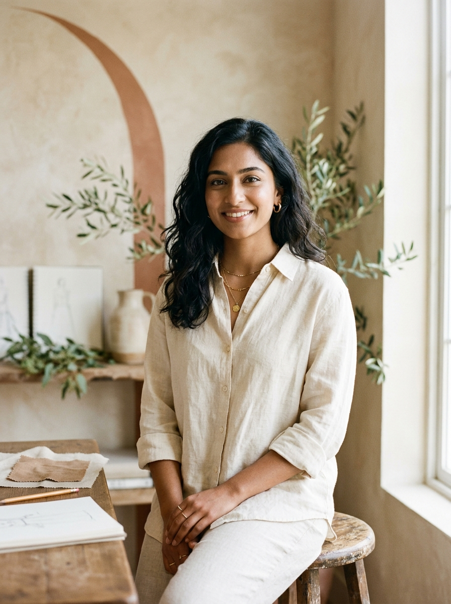

Creative Portfolio • BCA '25
PORT FOLIO
Designing digital experiences with purpose. Built with code, empathy, and craft.
Hello, I'm
Tamannaah Bhatia
An aspiring UI/UX designer and creative developer pursuing my Bachelor of Computer Applications (BCA). I explore the intersection of thoughtful design and creative technology to build digital experiences that feel intuitive, meaningful, and engaging.

Curated Works
Selected Projects


What I Do
Creative Focus
UI/UX • Interface Design
Building thoughtful visual wireframes, prototypes, and user flows centered on clarity, accessibility, and intuitive interaction.
Creative Front-End
Bringing designs to life with clean, semantic HTML5, modern responsive CSS3, and lightweight vanilla JavaScript.
Design Systems
Curating cohesive color systems, typography hierarchies, and reusable tokens that preserve visual harmony across screens.
Purposeful Motion
Adding subtle, natural micro-animations and state transitions that guide attention without creating distraction.
Good design is never accidental; it lives at the delicate intersection of human empathy, aesthetic poise, and functional code. My goal is to simplify complex ideas into digital experiences that feel natural, honest, and effortless to navigate.Tamannaah Bhatia • Aspiring Designer & Developer